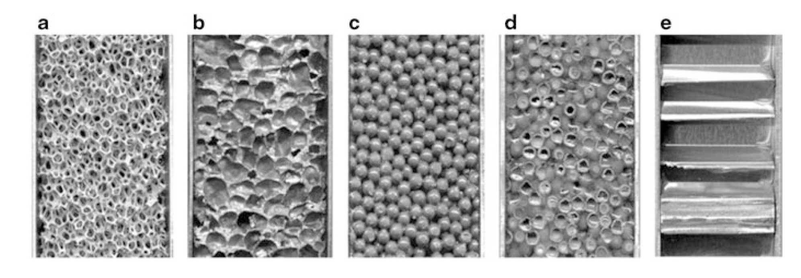
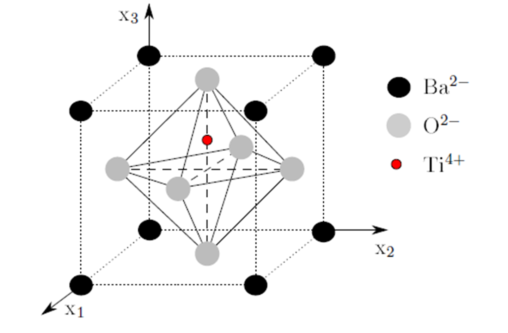
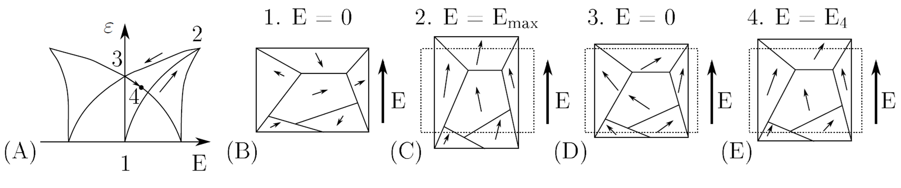
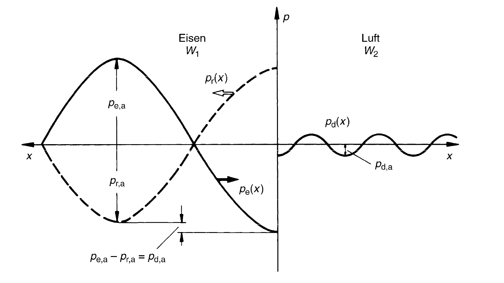

Zerstörungsfreie Prüfverfahren (ZfP)
ZfP 1.0 – Werkzeuge (zur Schärfung der Sinne) ZfP 2.0 – Analoge Systeme (zur Ansicht innerhalb der Komponenten) ZfP 3.0 – Digitale Verarbeitung und Automatisierung ZfP 4.0 – Transparenz von Informationen, technische & digitale Hilfsmittel und autonome und dezentralisierte Entscheidungen
| Fehler existiert | Fehler existiert nicht | |
|---|---|---|
| Detektion | True positive | False positive |
| Keine Detektion | False negative | True negative |
False negative bedeutet, dass ein Fehler existiert, aber nicht detektiert wird. Das kann zu Fehleinschätzung zum Zustand der Struktur führen. False positives sind Fehler die detektiert werden, aber nicht existieren oder nicht relevant sind. Dies kann ökonomisch ungünstig sein, wenn Reparaturen durchgeführt werden, welche nicht notwendig sind. Treten zu viele false positives auf, wird dem System kein Vertrauen geschenkt und dies kann auch zu Sicherheitsproblemen führen.
True positves and Ture negatives sind die erwünschten Ergebnisse einer ZfP.
Entwicklungsstufen
ZfP 1.0 – Werkzeuge (zur Schärfung der Sinne) ZfP 2.0 – Analoge Systeme (zur Ansicht innerhalb der Komponenten) ZfP 3.0 – Digitale Verarbeitung und Automatisierung ZfP 4.0 – Transparenz von Informationen, technische & digitale Hilfsmittel und autonome und dezentralisierte Entscheidungen
Probabilty of Detection
Ist eine Metrik, welche die Wahrscheinlichkeit der Detektion eines Fehlers einer bestimmten Größe angibt. Im Bild würde ein Fehler der Größe 22 mm mit 90% detektiert werden.

Die zulässige Fehlergröße ist in aller Regel bekannt. D.h. die Auswahl eines Prüfverfahrens wird unter anderem durch die POD bestimmt.
Die Wahrscheinlichkeit wird in aller Regel mit einer Konfidenz von 95% angeben. D.h. zu 95% werden 90% der Fehler detektiert.
Schadensgröße
- je nach Verfahren variiert die detektierbare Schadensgröße
- es gilt nicht immer kleine Schadesgröße $=$ besser
- minimaler Schaden $l = \frac{\lambda}{2}$ -> Abstasttheorem
\[c = \lambda f\]
\[c\]
ist die Licht- oder Schallgeschwindigkeit
\[\lambda = \frac{c}{f} = \frac{6000 m/s}{10^6 1/s} = 6 mm\]
 
Verfahrensübersicht
Tabelle übernommen aus Wikipedia
| Prüfverfahren | Dynamisch/ Statisch | Anregung | Prüfbereich |
|---|---|---|---|
| Akustische Resonanzanalyse | Dynamisch | Mechanisch | Volumen |
| Bewehrungsortung (induktiv) | Statisch | Magnetisch | Volumen |
| Bewehrungsortung (kapazitiv) | Statisch | Elektrisch | Volumen |
| Bodenradar | Dynamisch | Elektromagnetisch | Volumen |
| Dehnungsmessstreifen-Prüfung | Dynamisch | Mechanisch | Oberfläche |
| Durchstrahlungsprüfung | Dynamisch | Elektromagnetisch | Volumen |
| Feuchtemessung (kapazitiv) | Statisch | Elektrisch | Oberfläche |
| Feuchtemessung (resistiv) | Statisch | Elektrisch | Oberfläche |
| Impakt-Echo Verfahren | Dynamisch | Mechanisch | Volumen |
| Potentialfeldmessung | Statisch | Elektrochemisch | Volumen |
| Rückprallhammer | Dynamisch | Mechanisch | Oberfläche |
| Dichtheitsprüfung | Statisch | Chemisch | System |
| Eindringprüfung | Statisch | Mechanisch | Oberfläche |
| Zeitbereichsreflektometrie | Dynamisch | Elektromagnetisch | Volumen |
| Infrarotthermografie | Dynamisch | Thermisch | Oberfläche |
| Leitfähigkeitsprüfung | Elektrisch, Statisch | Thermisch | Volumen |
| Magnetinduktive Methode | Statisch | Magnetisch | Oberfläche |
| Magnetpulverprüfung | Statisch | Magnetisch | Oberfläche |
| Mikrowellenprüfung | Dynamisch | Elektromagnetisch | Volumen |
| Prozesskompensierte Resonanzprüfung | |||
| Reflexionsspektroskopie | Statisch | Elektromagnetisch | Oberfläche |
| Röntgenfluoreszenzanalyse | Statisch | Elektromagnetisch | Oberfläche |
| Schallemissionsanalyse | Dynamisch | Mechanisch | Volumen |
| Shearografie | Dynamisch | Optisch | Oberfläche |
| Visuelle Inspektion | Optisch | Oberfläche | |
| Streufeldmessung | Statisch | Magnetisch | Volumen |
| Ultraschallprüfung | Dynamisch | Mechanisch | Volumen |
| Vibrationsprüfung/Schwingungsanalyse | Dynamisch | Mechanisch | System |
| Wirbelstromprüfung | Statisch | Elektrisch | Oberfläche |
Visuelle Inspektion (Sichtprüfung)
Eindringprüfung
Die Eindringprüfung ist auf allen Werkstoffen anwendbar, die eine eindeutige Anzeige von Oberflächenfehlern erlauben und nicht porös sind. Vorwiegend sind das Metalle, Kunststoffe (mit Einschränkungen, z. B. Teflon), glasierte Keramiken und ähnliches. Bei Maschinenteilen aus Stahl wird wegen der hohen Korrosionsanfälligkeit gegen Wasser in der Regel ein Entwickler auf Lösemittelbasis verwendet bzw. bei ferromagnetischen (nicht austenitischen) Stählen gleich die Magnetpulverprüfung angewandt.

- Reinigung, 2. Farbe auftragen und eindringen lassen, 3. Oberflächliches reinigen, 4. Entwickler auftragen
Kann bei Tageslicht oder im dunkeln durchgeführt (Fluoreszierende Eindringprüfung) werden. Farbe variiert bedarfsabhängig.
Verfahren
Sichtprüfung
- kann mit verschiedenen Werkzeugen stattfinden und ist sehr verbreitet
- direkte Sichtprüfung
- Auge
- Boroskope (Elastoskope, Endoskope, Spiegelrohre, ...)
- indirekte Sichtprüfung
- Kameras
- Drohnen
Eindringprüfung
- Reinigung, 2. Farbe auftragen und eindringen lassen, 3. Oberflächliches reinigen, 4. Entwickler auftragen
- bei Tageslicht oder im dunkeln
Durchstrahlungsprüfung
Röntgen-, Mikrowellen-, Gammastrahlung
Synchrotronstrahlung (Spezialfälle, eher selten)
auch als Computertomographie nutzbar


Thermographie
aktive
- Bauteil ist warm und wird vermessen
- Unterschiede in der Temperaturverteilung können zur Identifikation von Fehlern genutzt werden
- Prozessanpassungen sind möglich
passive
- Bauteil wird angeregt und die Reaktion wird vermessen
- induktive Erwärmung bei Kohlefaserverbundbauteilen
Modalanalyse
\[\mathbf{M}\ddot{\mathbf{u}}+\mathbf{Ku}=\mathbf{0}\]
- Eigenformen
- Eigenfrequenzen
\[(\mathbf{K}-\omega^2\mathbf{M})\hat{\mathbf{x}}=\mathbf{0}\]
Federpendel $m\ddot{u}+cu=0$
\[c-\omega^2 m = 0\]
\[\omega = 2\pi f = \sqrt{\frac{c}{m}}\]
- Anregung mit einem Shaker oder Impulshammer
- Messpunkte mit Beschleunigungssensor oder Laser
- Ein Anregungspunkt -> viele Messpunkte
- Viele Anregungspunkte -> ein Messpunkt


Ultraschallprüfung
Wellenarten Longtitudinalwellen (P Wellen) Transversalwellen (S Wellen) Love Wellen Rayleighwellen Lambwellen, bzw. geführte Ultraschallwellen Symmetrische, unsymmetrische und Schubwellen Torsionswellen Schubwellen

Schallgeschwindigkeiten
\[c_{l}=\sqrt{\frac{E(1-\nu)}{\rho(1-\nu-\nu^2)}}\]
\[c_{t}= \sqrt{\frac{G}{\rho}}\]

Geführte Ultraschallwellen sind dispersiv sie haben eine Gruppen und Phasengeschwindigkeit
Dispersion
Gruppengeschwindigkeit - wie schnell bewegt sich die Hüllkurve
Phasengeschwindigkeit - wie schnell bewegt sich die Phase (einzelne Frequenz)
für eine Frequenz sind Gruppen und Phasengeschwindigkeiten identisch

- Für frequenzabhänige Phasengeschwindigkeiten verbreitert sich die Hüllkurve -> Dispersion
Piezoelektrischer Effekt
- Aktuatoreffekt
- Sensoreffekt
\[d_{31}\]
; el. Spannung in 3 Richtung und Deformation in 1, bzw. 2 Richtung\[d_{33}\]
; el. Spannung in 3 Richtung und Deformation in 3 Richtung


Reflexionen an Grenzflächen
- Schallwiderstand $W = c_L\rho$
Reflektierender Schall $\frac{p_{a,r}}{p_{a,e}}=\frac{W_2-W_1}{W_2+W_1}$
Durchgehender Schall $\frac{p_{a,d}}{p_{a,e}}=\frac{2W_2}{W_2+W_1}$

Signal - Rausch Verhältnis
\[SNR = \frac{P_{Signal}}{P_{Rauschen}}\]
- Mehrfachmessungen reduziert den Rauschanteil
Messaufbau
- 1 - 2 Wandler
- Messverstärker
- Messaufnehmer

Anbindung des Prüfkopfs an die Oberfläche
Wasser
- billig
- gut automatisierbar
Motoröl, Schmierfett
- bereits vorhanden im Bauteil
- nicht optimiert auf Prüfung
Glycerin, Gel
- Vorteilhaft ist die hohe Viskosität und die hohe akustische Impedanz
- raue Oberflächen und stark dämpfende Materialien (Schweißnahtprüfung)
Luft
- spart Koppelmedium
- viel Rauschen
Impuls-Echo Verfahren
Zone des "Todes"
- Zeit für Wechsel von Sender zum Empfänger
Doppelsensorsystem
- Messung auf beiden Seiten
- Zugänglichkeit und Aufwand

Schweißnahtprüfung
- Schrägschallung aufgrund der schwierigen Ankopplung

Klebschichten
- werden ähnlich geprüft
- es kann sogenannte "kissing bonds" geben
Wanddickenmessung

Bildgebung
- Messdaten können auf verschiedene Weise dargestellt werden
A Bild (amplitude)
- Laufzeit vs. Amplitude
- bei konstanter Geschwindigkeit kann für einen Punkt eine Fehlstelle im Signal detektiert werden

B Bild (brightness)
- Einzelpunkt ist nur eine andere Darstellung des A Bildes (Intensität des Echos wird durch Helligkeit dargestellt)
- Durch die Erfassung der Schallrichtung können 2D oder 3D Bilder erzeugt werden

C Bild
- ein projiziertes Bild der Größen der Fehlstellen

D Bild
- flächiger Scan


Dickenmessung mittels Geführten Ultraschallwellen
Mikroskopie
- Analyse der Mirkostruktur von Werkstoffen
- Lokale Analyse der Werkstoff- oder Kornzusammensetzung
- Präparation der Probe (Schleifen, Oberflächenbehandlung, usw.)
- Lichquellen beeinflusssen maßgeblich den Kontrast
- Filter

Lichtmikroskopie
- Korngrößenanalyse von Metallen und Legierungen
- Flächenzählverfahren
- Linienschnittverfahren (Korngrenzenschnitte mit durch den Prüfer in das Bild definierten Linienzug)

Elektronenrastermikroskop
- nutzt Elektronenstrahlen zum Abtasten
- Auflösung hierdurch deutlich erhöht $1nm .. 2nm$
- ca. 500 mal bessere Vergrößerung als beim Lichmikroskop (2000:1) vs. (1000000)

Rastersondenmikroskopie
- Abstasten der Struktur mit einer Nadel
- Wechselwirkung ist nicht mechanisch und unterscheidet sich je nach Mikroskop
- Tunnelstrom
- Van der Waals Kräfte (korreliert mit Federsteifigkeit)
- magnetische Kräfte